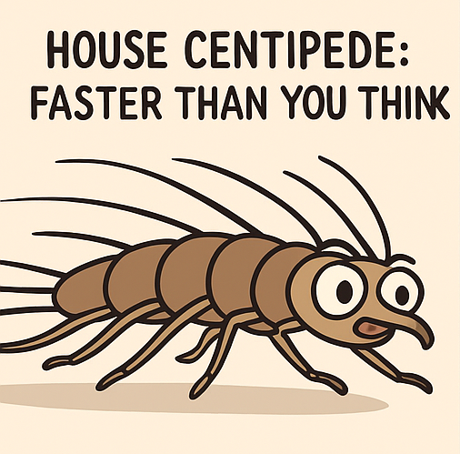
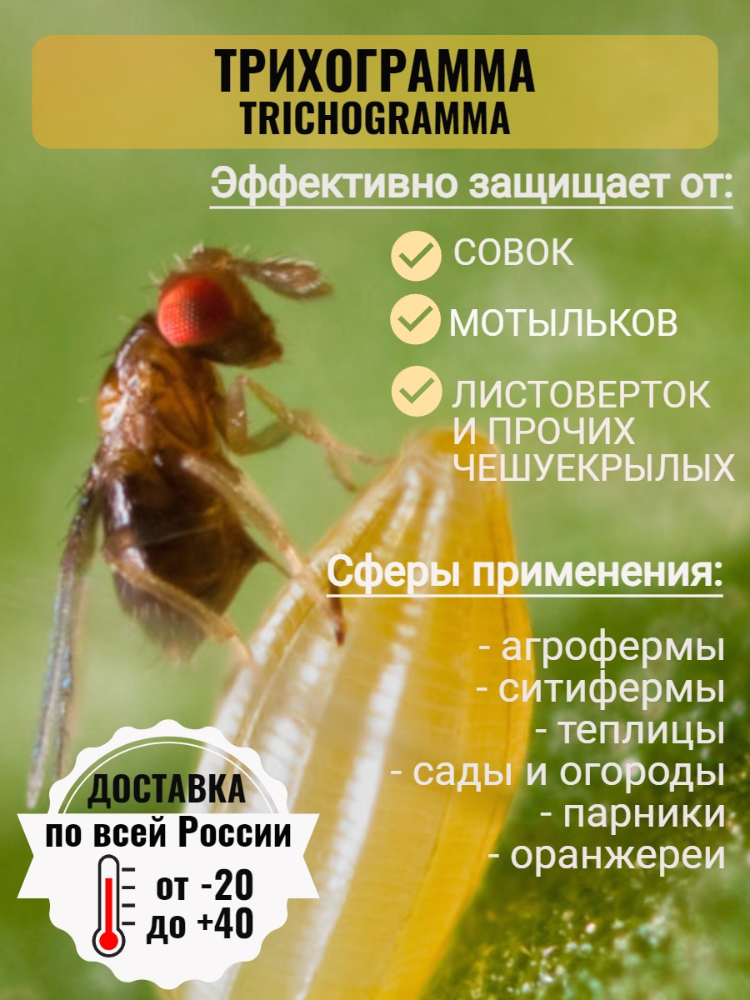

Мухоловка может бегать до 40 см в секунду — почти как гепард в своих масштабах.
На фото - реклама средства от насекомых с неточностью: средство убило (человека)-паука. Технически пауки не насекомые, а паукообразные. Но пауки — наиболее эффективные "хищники" в жилых помещениях. С ними сравнится только мухоловка.
Некоторые насекомые (например, трихограммы) не приходят в дом сами, их можно приобрести как часть био-защиты от вредителей. Например, их покупают для выпуска в шкафы от моли. На фото пример рекламы такого товара.
На фото странный, но модный аксессуар 17 века - блохоловка (одна из его разновидностей). Внутри помещали ткань, пропитанную медом, жиром, кровью или благовониями — чтобы приманить и поймать блох и вшей. Это был вполне нормальный аксессуар для аристократов, потому что даже вельможи часто страдали от паразитов.